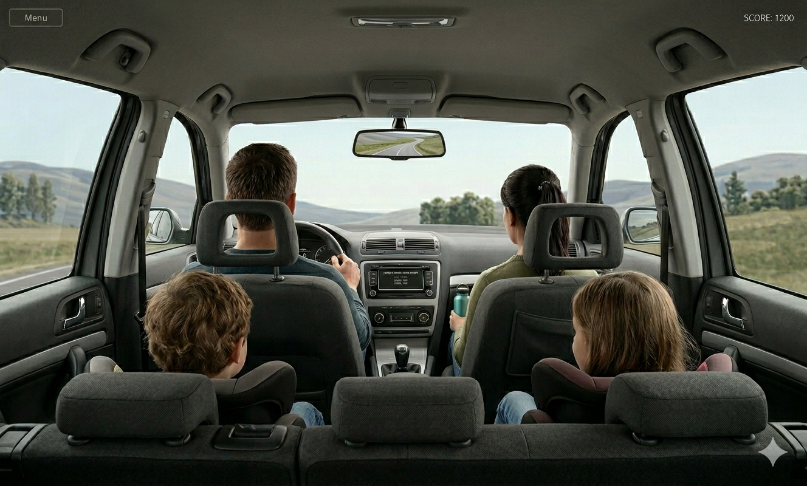

Vocab Games for Road Trips, Dinner Tables, and the 5 Minutes Before Bed
CW
Cueword Editorial
|May 2026|5 min read
The best vocabulary lesson your child had this year probably didn't happen in a classroom. It happened when they were stuck in the back seat for three hours, or waiting for dinner that was taking too long, or wired at 9 PM when they should have been asleep.
Kids don't need a worksheet to learn words. They need a reason to play with language. These games give them that — no prep, no materials, no convincing required. Just time you were already going to spend together.
Road Trip Vocab Games

Three hours in the back seat is more than enough time to build vocabulary range.
Last Letter
One person says a word. The next must say a word that starts with the last letter of the previous word. No repeating. The longer the chain goes, the harder it gets — and the more obscure the vocabulary becomes. That's the whole point.
What it builds: vocabulary range · recall speed · spelling awareness
Category Countdown
Pick a category — animals, foods, things in a kitchen, things that are loud — and take turns naming things that fit. The round ends when someone can't think of a new one. Start simple and push toward more abstract categories as the trip goes on: things that feel heavy, words that describe a storm, things you can't see but know are there. Older kids find the abstract rounds genuinely hard.
What it builds: word retrieval · meaning grouping · descriptive vocabulary
Word Twist
One person says a base word. The next player must change it by adding a prefix, suffix, or tweaking the root — then use the new word in a sentence. Example: hope → hopeful → hopefully → hopeless. Keep going until the chain breaks. The constraint forces players to think about how words are built, not just what they mean.
What it builds: word root awareness (prefixes & suffixes) · sentence construction · vocabulary expansion through word families
Dinner Table Vocab Games
Word Chef
Pick a food on the table (or any dish you like). Each person must add one descriptive word to "season" it — adjectives, sensory words, or even silly ones. Example: Spicy. Crunchy. Golden. Mysterious. Keep going until someone repeats or gets stuck. The goal isn't to be accurate — it's to reach for unusual words.
What it builds: adjective use · sensory vocabulary · quick thinking
Word Swap
Take any sentence someone just said at the table. One player replaces a word with a synonym or near-synonym. The next player replaces another word. Keep going until the sentence has changed completely — but still makes sense. The harder the swap, the more points. "The food is good" can become "The cuisine is exceptional" in just two rounds.
What it builds: synonym range · vocabulary flexibility · recall speed
Metaphor Maker
Take an object at the table. Each person must complete the sentence: "[Object] is like _____ because _____." Simple comparisons are easy — push for unexpected ones. Whoever makes the most surprising metaphor wins the round. Older children will surprise you once they stop defaulting to the obvious.
What it builds: figurative language · creative expression · descriptive vocabulary
"Kids don't need a worksheet to learn words. They need a reason to play with language."
— Cueword Editorial
The 5 Minutes Before Bed
One Word, One Sentence
At the end of the day, each person names one word they heard, read, or thought about today that felt new or interesting. Everyone tries to use it in a sentence. Done in three minutes. The goal is to build the habit of noticing language — which is the foundation everything else is built on.
What it builds: vocabulary attention · memory consolidation · daily word awareness
Echo & Expand
One person says a word. The next must repeat it and add one new descriptive word. Then the next player repeats the growing phrase and adds another. Example: rain → cold rain → cold driving rain → cold driving rain at midnight. Keep going until someone can't remember the chain or gets genuinely stuck.
What it builds: memory & sequencing · adjective layering · descriptive fluency
When there's a bit more time before bed, a Cueword session covers vocabulary, writing, speaking, reading, and listening in a single focused block of around 10–15 minutes. Sessions are designed to end cleanly — there's no "just one more" drift. And unlike the games above, Cueword gives your child specific AI feedback on what they actually wrote and said.
Vocabulary sticks when words are encountered across many different contexts — not just once on a flashcard.
Research on vocabulary learning shows that words stick best when children meet them in many different contexts, not just once on a flashcard or worksheet. Informal games create those repeated encounters: a word is heard, spoken, reshaped, and remembered in the middle of play. Each new use adds another layer of meaning, turning the word from something abstract into something familiar and usable.
American Educational Research Association (AERA, 2012): Game-based learning environments improve vocabulary acquisition and motivation, especially when children encounter words socially and repeatedly.
Because the games are social and playful, they also attach words to experiences — laughter at the dinner table, a challenge on a car ride, a bedtime routine. That connection makes vocabulary durable: words aren't just memorized, they're lived.
Frequently Asked Questions
What are good vocab games to play in the car with kids?▼
Last Letter, Category Countdown, and Word Twist all need zero materials and work across a wide age range. For younger children, Category Countdown with concrete categories (animals, foods, things in a kitchen) is the easiest entry point. Word Twist scales naturally as kids get older — the word families get longer and the sentence-building gets more demanding. All three work in the front-and-back-seat format without anyone needing to look at a screen.
Can dinner table word games actually improve a child's vocabulary?▼
Yes — and the mechanism matters. Word Chef, Word Swap, and Metaphor Maker don't drill definitions; they create situations where your child has to use a word actively, in context. Research on vocabulary acquisition consistently shows that varied contextual exposure produces better long-term retention than definition study alone. The dinner table also adds something a worksheet can't: the word gets attached to a moment, which makes it stick.
How long should a bedtime vocab game take?▼
Three to five minutes is plenty for One Word, One Sentence or Echo & Expand. Both are designed to wind down, not rev up. If you want something structured with measurable progress, a 10–15 minute Cueword session is designed to end cleanly and fits naturally into a before-bed slot with a real stopping point.
Do vocab games help with school performance?▼
Vocabulary knowledge is one of the strongest predictors of reading comprehension, which underlies nearly every subject in Grades 3–10. Kids who are regularly exposed to varied vocabulary — even informally — consistently outperform peers on reading, writing, and content-area tests. The effect compounds: a richer vocabulary makes reading easier, which builds vocabulary further.
What vocab games work across both younger (grades 3–5) and older (grades 6–10) kids?▼
Category Countdown and Word Swap work across both ranges with minimal adjustment. Younger kids stick to common synonyms and concrete categories; older kids get pushed toward abstract descriptors and less familiar vocabulary. Metaphor Maker is surprisingly effective with older children — the creative constraint becomes genuinely challenging once they're expected to move beyond simple similes.
10 minutes a day to better English Communication
Cueword offers a 7-day free trial with full access — no charge until day 7.